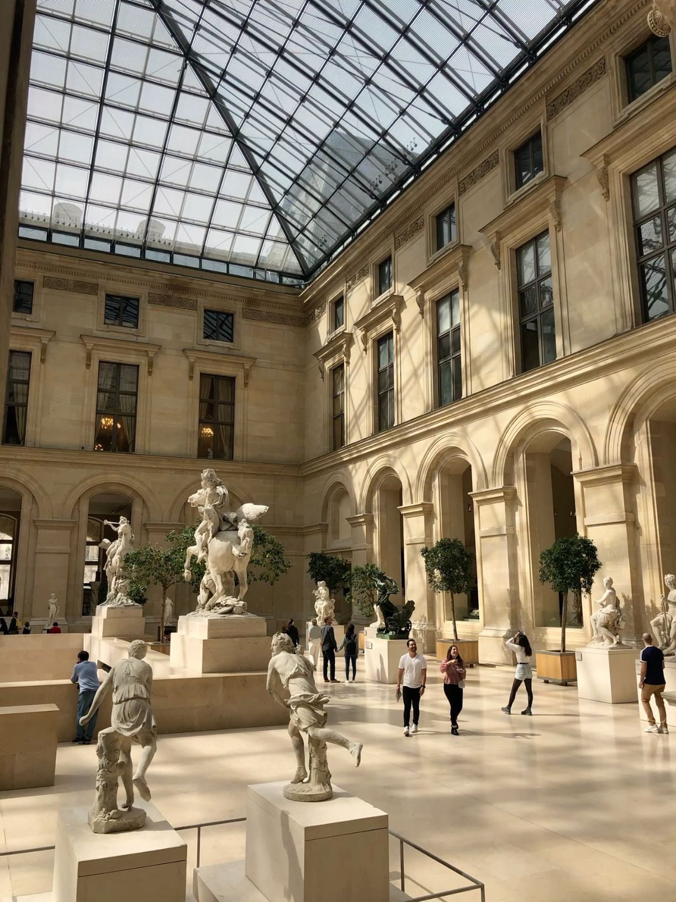

The exhibition
Four centuries ago, a portrait was already a kind of interface.
Paint, posture, clothing, and light were arranged to transmit identity. L’Archivio Luminoso follows these visual codes from the Renaissance into our own image-saturated moment.
